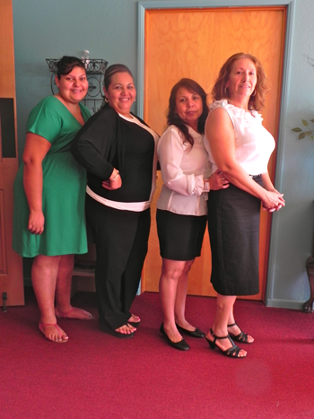

Our Mission: Love God, Love One Another, Make Disciples

Proverbs 31:10 A capable, intelligent, and virtuous woman--who is he who can find her? She is far more precious than jewels and her value is far above rubies or pearls.
Women are talented. Smart. Funny. Compassionate. Unlimited in potential! We're also stressed out. Overwhelmed. Busy. Tired. Definitely in need of something more!
Looking for a community where you feel safe, where you belong, and feel supported? A place where you can build friendships with each other and with God - and where you can discover how authentic faith in Jesus connects to a woman's real life?
Come follow us and find the place to grow in your faith, connect with friends and discover the life-changing power of God's presence.